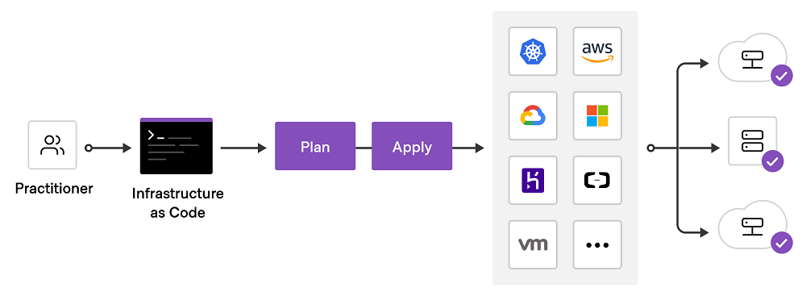
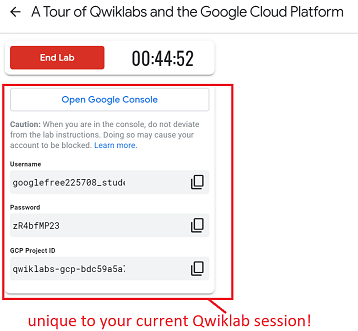

This workshop will introduce you to deploying cloud resources through IaC (infrastructure-as-code) using Terraform. This is an important part of designing infrastructure and a staple skill of cloud DevOps.
In this workshop you will learn:
1- Terraform configuration and syntax fundamentals.
2- Modifying cloud infrastructure using Terraform.
Reminder: for all Terraform tasks you need to use the Cloud Skills Boost platform, if you have not yet signed up to the platform yet then please follow the instructions in Workshop 1
Please first watch the short video below:
What is Infrastructure as Code with Terraform? | Terraform - HashiCorp Learn
This week you will study the Terraform labs from the Cloud Skills Boost quest: Automating Infrastructure on Google Cloud with Terraform If you complete the Automating Infrastructure on Google Cloud with Terraform: Challenge Lab at the end, you will earn a digital skills badge you can share on your professional networks and add to your CV.
Note: you must not use your personal Google account details for Cloud Skills Boost, you only use the temporary credentials supplied in each lab, these credentials are only valid for ONE use and will change if you to run the lab again. See example below:

Note: You must enrol on this course Automating Infrastructure on Google Cloud with Terraform before attempting the following tasks.
Login to your Cloud Skills Boost account and complete the Terraform Fundamentals lab here.
Login to your Cloud Skills Boost account and complete the Infrastructure as Code with Terraform lab here.
Login to your Cloud Skills Boost account and complete the Interact with Terraform Moduleslab here.
Login to your Cloud Skills Boost account and complete the Managing Terraform State lab here.
If you have fully completed the four Terraform labs so far (two from workshop 2 and two from this workshop), then you can take on the optional Terraform challenge lab below.
Login to your Qwilabs account and complete the Automating Infrastructure on Google Cloud with Terraform: Challenge Lab here.
The challenge lab will test your knowledge to import, create, reprovision, destroy, and update infrastructure using Terraform. If you complete the challenge lab (as well as the four other labs) you will be awarded a digital skills badge as below. You can share this badge on professional networks such as LinkedIn and link to from your portfolio and CV.
That is all for this week! If you did not manage to finish this workshop then please ensure you complete it in your own time.